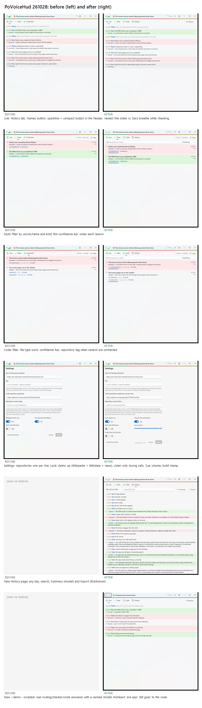
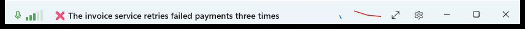

PoVoiceHud, 28 Oct 2026
Before and after, from the --demo window. All pairs in one image: 261028-features.png.

Header and Live

- Header: a trend line of the share found correct after each recent verdict (red when most are wrong); its tooltip has the counts and the model's calls, average time, tokens, retries and failures. A compact button sits next to ⚙.
- Animations: the level bars breathe while a claim is checked, the newest line slides in, and an incorrect claim washes the header red.
- Pages: a fourth tab, History; "Code facts" is now "Code" to make room. Names renames You and Them for the call.
Facts and Code
- A filter by words or a speaker's name, and by kind (correct, incorrect, answers, said by you or them). Copy copies what is shown.
- A thin bar under each row for how sure the model was (it now gives a 0–1 confidence after its verdict).
- Code rows: an icon for each file's kind, and the repository's name when several are connected.
Settings
- Code repositories, one per line (one token for all).
- "Look claims up" now asks Wikipedia, Wikidata and (for claims about the present) GDELT news at once.
- New: Listen only during calls, Cue volume, and the build stamp (YYMMDD and version) in the corner.
History (new)
- Any day from the session log, searchable. Summary asks the model for main points, decisions, corrections, open questions and the code; muting after a conversation does the same in the background.
- Export writes
Documents\PoVoiceHud\Meeting {date}.mdand opens it.
Compact (new)
